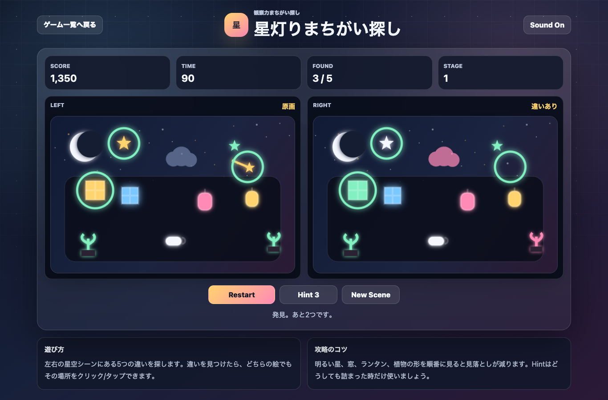

遊び方
- 左右の星空シーンを見比べます。
- 違っている場所を見つけたら、どちらの絵でもその位置をクリック/タップします。
- 5つすべて見つけると次のステージへ進みます。
間違い探し / 脳トレ / 無料ブラウザゲーム
星灯りまちがい探しは、左右の星空シーンを見比べて5つの違いを探す無料ブラウザ間違い探しゲームです。インストール不要で、スマホでもPCでも短時間に観察力を試せます。

空、窓、ランタン、植物、カップの順に見ると見落としにくくなります。全体を眺めるより、左上から右下へ視線を動かすのがおすすめです。
星灯りまちがい探しは、無料ブラウザゲーム 暇つぶし、間違い探し、脳トレゲームを探している人向けの短時間ミニゲームです。絵を見比べるだけなので、初めてでもすぐに遊べます。
正解箇所が毎回変わるため、同じ遊び方でも繰り返し遊べます。やさしい見た目ながら、色・大きさ・位置・消えた物を見分ける観察力が試されます。
はい。無料ブラウザゲーム広場では、インストール不要で無料プレイできます。
スマホ・PC対応です。スマホでは違う場所をタップして遊べます。
短時間で遊べるミニゲーム、観察力ゲーム、間違い探し、脳トレパズルを探している人におすすめです。
星灯りまちがい探しと近い無料ブラウザゲームを、目的や端末別の入口から探せます。